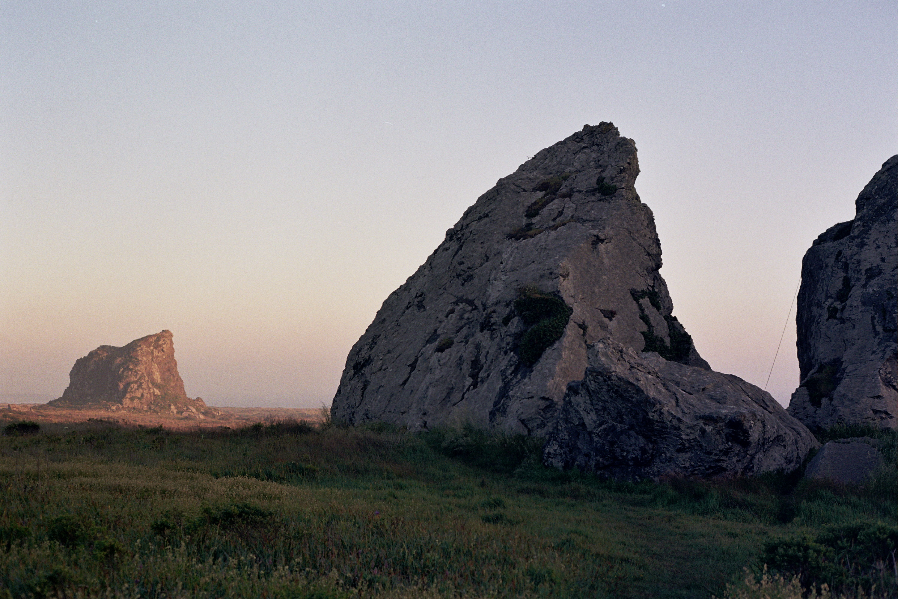
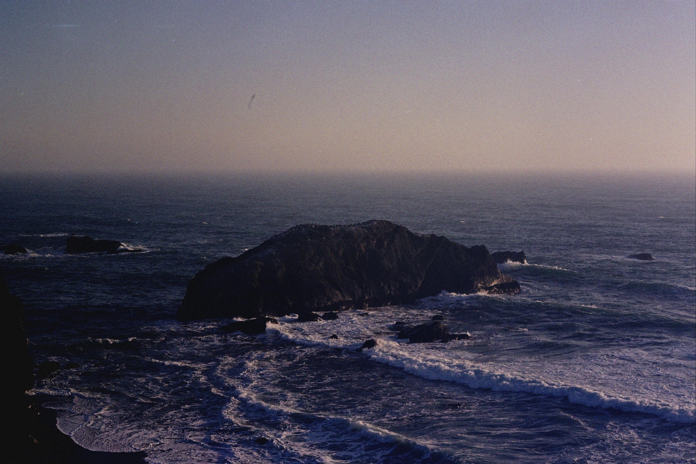

About Me
-
I was raised on the property of my family restaurant, on the Sonoma Coast in Northern California. I was an active participant in the family business and filled nearly every role through the years: prep cook, waiter, housekeeper, bookkeeper, etc.
-
I grew up cycling, hiking, kayaking, and taking advantage of the gorgeous nature around me. My current favorites are rock climbing and scuba diving.
-
I am an avid “hobbyist.” I enjoy reading, film photography, crocheting, embroidery, and pursuing outdoor adventures. In fact, nearly all of the images on this website were taken by me.
-
My favorite subject was always math. I adored its universality and functionality. Now, I am passionate about data science because it can be applied nearly everywhere. We have so much information in this world, but it isn’t useful unless we understand it and ask creative questions.

